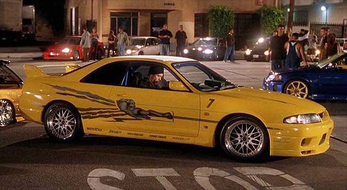
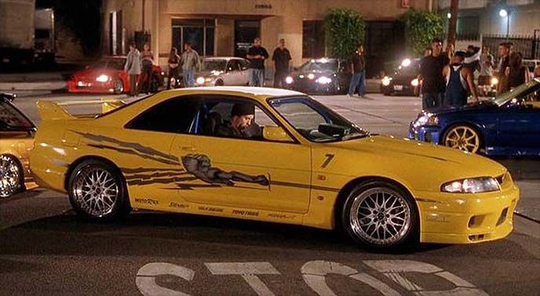

El boom de los autos japoneses en la cultura callejera de L.A.
En 2001, Rápido y Furioso llegó para marcar un antes y un después en el cine de acción urbano. Más allá de la trama policial y los conflictos personales, la película encendió la pasión por los autos japoneses modificados: Nissan Skyline, Toyota Supra, Mazda RX-7 y Mitsubishi Eclipse se robaron la pantalla y el corazón de una generación. Con el rugido de motores turboalimentados y escapes humeantes, la cinta retrató con fidelidad la escena callejera de Los Ángeles, donde el tuning, el res peto y la velocidad eran ley. Así comenzó una saga que convirtió a los JDM en leyendas de culto.
 
